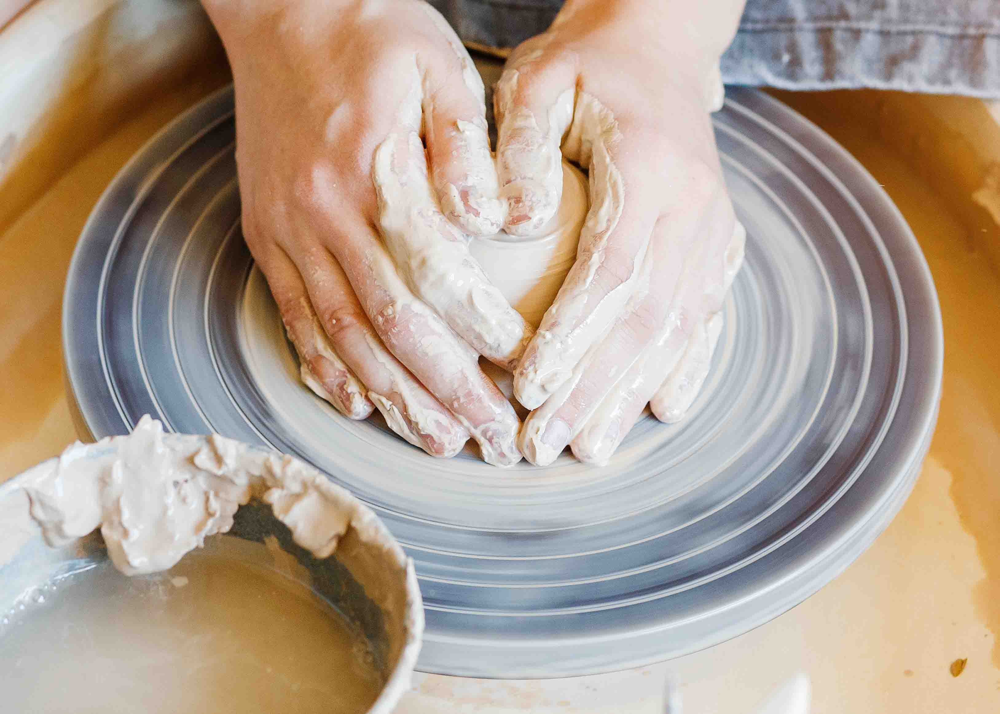
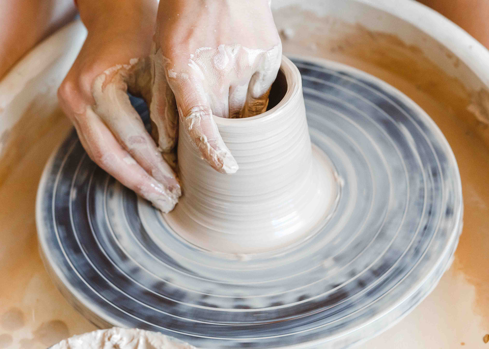
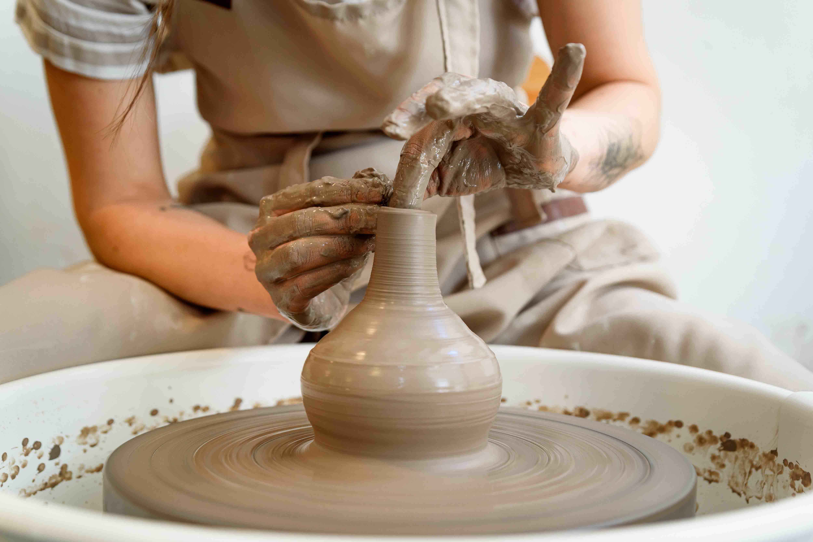

Sessão Privada na Roda para Um.
Quer aprofundar o trabalho com argila ou começar do zero com acompanhamento individual? Nesta sessão privada aprenderá os fundamentos da roda de oleiro com um instrutor dedicado só para si.
Esta é uma sessão privada sem datas fixas no calendário. Basta entrar em contacto e encontramos juntos um horário que lhe seja conveniente. O WhatsApp é a forma mais rápida de nos contactar.
Solicitar via WhatsApp Solicitar via E-mailRespondemos em 48 horas para confirmar a sua sessão.
Argila, materiais, esmaltagem e cozedura em forno incluídos. Peças prontas para levantar 3 a 4 semanas após a sessão.
Sobre esta sessão
Uma sessão privada de roda de oleiro é a forma mais pessoal de descobrir um dos ofícios mais antigos do mundo.
O que vai aprender
A base do trabalho no torno. Aprender a centrar um bloco de argila na roda em movimento exige concentração, técnica e muita (muita) paciência.

Com a argila centrada, abre-se o centro e puxam-se as paredes para formar um cilindro. O ponto de partida para a maioria das formas feitas no torno.

Pressionar e guiar suavemente as paredes para criar a forma desejada. Uma tigela, uma caneca, um pequeno vaso.

O que está incluído
Detalhes da sessão
Tem alguma dúvida?
Tudo o que precisa de saber sobre o estúdio, a roda de oleiro e como marcar a sua sessão privada.
Ver FAQ